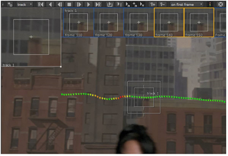
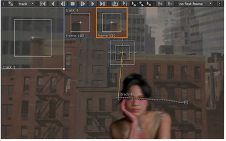

Again, even with preset keyframes, some sequences are inevitably going to cause problems. There are a number of pre-tracking checks you can perform to assist Auto-Tracking:
• Play through the sequence before placing your tracking anchors,
• Look for features that are consistent throughout the majority of the sequence,
• Avoid occluded features where possible - see Dealing with Occlusions.
Keyframe tracking won’t generally stop when a problem is encountered. Tracker attempts to continue using the next keyframe as a reference, which is why placing a lot of keyframes around problem areas is recommended.
TIP: Tracking areas of distortion or noise can produce unreliable results due to the movement of the pixels in the pattern matching box. One way to deal with this is to seed multiple tracks in and around the problem area and then average the resulting tracks together, producing a single more reliable track, by clicking average tracks in the properties panel.
| 1. | First, turn on the color-coded error indicator by clicking the traffic light Viewer tool. |
Each keyframe is colored on a sliding scale from green (good match) to red (poor match).

Bear in mind that a red keyframe doesn’t necessarily mean that the tracking result is poor, only that Tracker couldn’t reliably match the pattern from one keyframe to the next.
| 2. | Move the tracking anchor to the first of the poor frames, just about the center of the image in the example. |
| 3. | Tracker defaults to adding and deleting keyframes automatically when certain conditions are met, but you can toggle these features on and off in the Properties Tracker > Settings tab Keyframe Tracking controls: |
• re-track when keyframe is moved - disable this control if you plan to manually position multiple keyframes before re-tracking.
• re-track on creation of a new keyframe - disable this control when placing multiple new keyframes, such as when the track encounters problem areas.
• create new key when track is moved - you could disable this control if you wanted to use the zoom window to examine the sequence more closely without triggering a re-track.
• auto-tracks delete keyframes - when this control is enabled, custom keyframes are deleted during automatic re-tracking.
| 4. | Using the zoom window, drag the anchor to the correct location of the grabbed pattern. |
Tracker attempts to recalculate the track by including your correction.
| 5. | Advance the playhead to the next poor keyframe and repeat until the track is complete. |
Tracker’s offset capability also applies to keyframe tracking, allowing you to track an obscured feature using the relative position of another feature, providing that the distance between the two points remains constant.
| 1. | Place keyframes normally until you reach the occlusion. |
| 2. | Play though the sequence to identify a likely offset point - a pattern that remains equidistant from the last keyframe. |
| 3. | Hold down Ctrl/Cmd and drag the tracking anchor to the offset position. |

The offset amount is recorded in the Tracks list and highlighted in yellow in the Viewer.
| 4. | Continue tracking as normal by clicking the track backward (Z) or forward (V) button. |
Tracker combines the two tracks into a single continuous track.
| 5. | Use the clear backward and forward buttons |
NOTE: You can reset tracking anchor pattern and search areas by clicking .
|
|